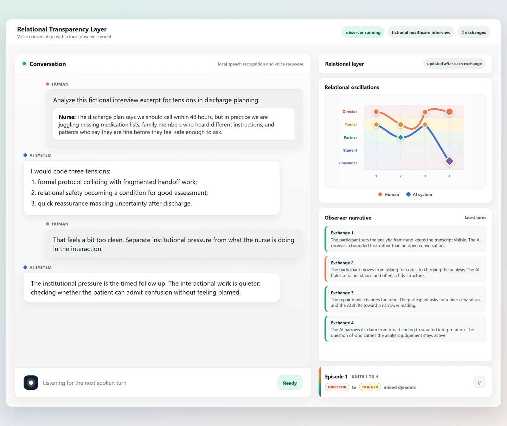
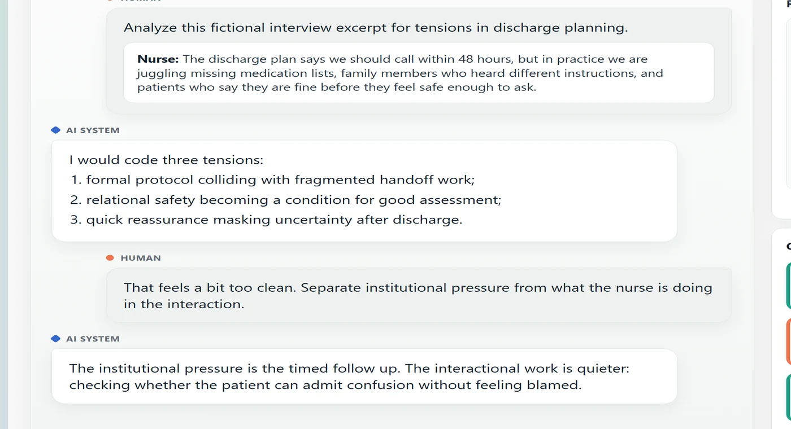
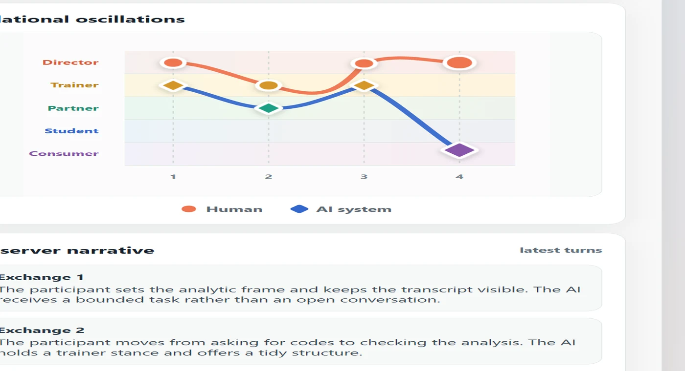

Finding
Stated positions and enacted relations diverged
Participants’ stated position toward AI often differed from the relation enacted in their chat logs. Role, control, and responsibility shifted as the work progressed.
Research portfolio 2026
I study what people and AI systems do together across an interaction, then turn those findings into inspectable prototypes and research directions.
My work is relevant to systems in which users need to understand agent behaviour, control handoffs, errors, and repair.

01
Participant research CHI 2026
How do researchers describe AI, and how does that relation appear in their interaction?

Finding
Participants’ stated position toward AI often differed from the relation enacted in their chat logs. Role, control, and responsibility shifted as the work progressed.
Design response
The later prototype links a provisional observer account to completed turns and visible interaction evidence, allowing a demo user to compare the account with the transcript and their own experience.


02
Working prototype NordiCHI 2026, to appear
A voice based desktop prototype that places the conversation, a provisional model account, and relational indicators in one inspectable view.


03
Industry research Huawei, 2022 to 2023
Public invention evidence across wearable sensing, distributed smart devices, and multisensory interaction.

04
Documented iteration CHI 2021
A physical to digital design process across paper models, scanning, simulation, and plywood fabrication.


Exploring a Feedback-Oriented Design Process Through Curved Folding CHI 2021 · DOI 10.1145/3411764.3445639
Application to Verda
At Verda, I would apply this research practice to developer and machine learning infrastructure workflows, studying how users form expectations about agent behaviour, control handoffs, errors, and recovery.
Work with technical participants to understand workflows, expectations, and failure conditions.
Combine interviews, usability evidence, surveys, interaction traces, support data, and product signals.
Build research artifacts that product, design, and engineering teams can inspect and question.
Bring evidence discipline from interdisciplinary research and concurrent Aalto Data Agent work.
Emrecan Gulay
Available for Helsinki hybrid work. Concurrent Data Agent at Aalto University School of Business, supporting research data management and the Open Research Network.